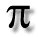

(Yeah yeah, I'm lazy... I used Frontpage... =P)
October 17, 1999
Hey! Boredom2 is back as a "subdivision" of
OliverWEB
. I had a great birthday yesterday, thanks guys =) Not much else to put here right now... maybe later =)
Oh! What's that? (*hint hint*)

Copyright © 1999 Oliver K. Wong
All Rights Reserved.